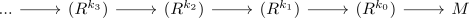

natural isomorphism between tor_n and tor_n+1
Proposition
Let \(R\) be a ring and $\mathrm{RMod}$ the category RMod and $\mathrm{Tor}_n^R(M,-)$ the Tor Functor for $n \geq 1, k \geq 0$ Then there exists a module $M'$ and a natural isomorphism
\begin{align*}
\mathrm{Tor}_{n+k}^R(M,-) \cong \mathrm{Tor}_n^R(M', -)
\end{align*}
Proof
It suffices to show this for $n = 1, k = 1$ (cf. natural isomorphism for a shift of coeffacable left derived functors, tor functor coeffacable )
commutative
using Tor functor symmetric for a commutative ring and tor functor commutes with tensor product it suffices to find an $\tilde{M}$ such that
\begin{align*}
\mathrm{Tor}_{n+1}^R(M,A) \overset{\cong}{!} \mathrm{Tor}_{n}^R(M \otimes_R \tilde{M}, A) \\
\cong& \mathrm{Tor}_n^R(M, \tilde{M} \otimes_R A) \\
\cong& H_n(M_n \otimes \tilde{M} \otimes -)
\end{align*}
where $M_*$ is free resolution of $M$
Choose a free resolution

where $R^{k_n} = \oplus_{\mathrm{ker}(R^{k_{n-1}} \rightarrow R^{k_{n-2}})$
Then let
\begin{align*}
M' \coloneqq (\bigoplus_{P_1 \setminus \mathrm{ker}(P_1 \rightarrow N)} R) \otimes M
\end{align*}
Then it follows that
\begin{align*}
M_* \otimes
\end{align*}